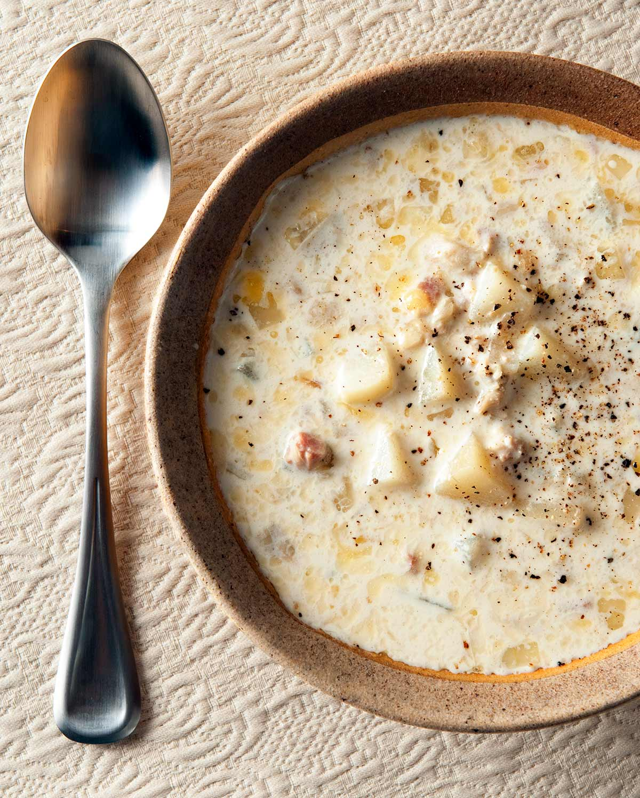

New England Clam Chowder

Description
This New England clam chowder is a hearty recipe that
will warm you up on cold winter days.
Ingredients
- 4 slices bacon, diced
- 1 1/2 cups chopped onion
- 4 cups peeled and cubed potatoes
- 1 1/2 cups water
- 1 1/2 teaspoons salt
- 1/2 teaspoon ground black pepper to taste
- 3 cups half-and-half
- 3 tablespoons butter
- 2 (10 ounce) cans minced clams
Steps
- Place diced bacon in a large stockpot over medium-high heat;
cook and stir until almost crisp. Add onion;
cook and stir until tender, about 5 minutes.
- Stir in potatoes and add water;
season with salt and pepper and bring to a boil.
Reduce heat to low and simmer, uncovered,
until potatoes are tender, about 15 minutes.
- Pour in half-and-half and add butter.
Drain clams, reserving clam liquid; s
tir clams and 1/2 of the clam liquid into the soup.
Cook until heated through, without boiling, about 5 minutes.
Home